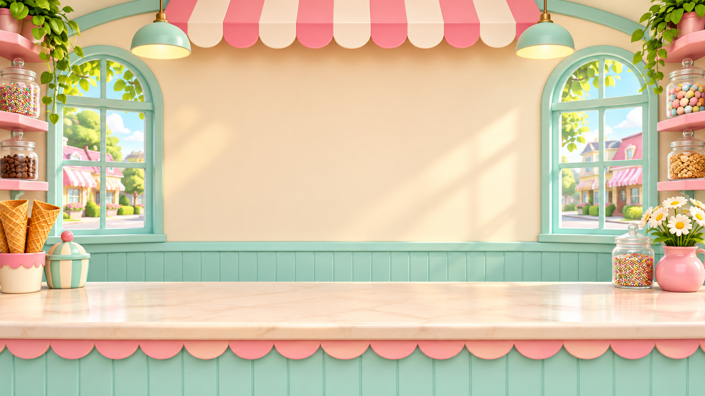

Phonics practice, made playful
G Learning Games
Interactive games that give learners another way to sort phonics words and build sentences from the language already found in their books.
Choose a game
Open one of the games or return to the previous Phonics setup.
FRUIT WORD SORT · FPR K / A / B
Sound sorting
Hippo Sound Safari
Drag fruit words to the hippo for the matching sound. Correct words are eaten; try-again words are spat back.
Play Hippo Sound Safari
SENTENCE ASSEMBLY · SAD / FPR K / A / BSentence building
Scoop Up a Sentence
Arrange word and punctuation scoops in order. Check the sentence, then read it once the words come together.
Play Scoop Up a Sentence PAST PROJECTS
PAST PROJECTSEarlier work
Previous Phonics Demos and Games
Return to the previous Phonics Prototypes hub and its original classroom, diagnostic, and game sections.
Open previous setup